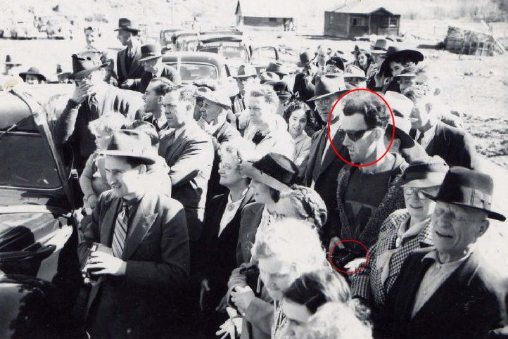

John Titor
Definição: A hipótese da viagem no tempo se refere ao conceito de mover-se para trás e/ou para frente através de pontos diferentes no tempo em um modo análogo à mobilidade pelo espaço-tempo. Algumas interpretações de viagem no tempo sugerem a possibilidade de viajar através de realidades paralelas.
"O Tempo. Desde as mais remotas civilizações essa grandeza gera um fascinio mágico nas pessoas, principalmente naquelas que estudam os fenômenos do universo. Aristótenes, Galileu Galilei, Newton e Albert Einstein. Mas poderia o homem viajar no tempo? Poderia se deslocar tanto para o passado como para o futuro? Seria isso possível? Será que em outra época distante já foi inventado um equipamento que permita realizar essa façanha?"
Segundo John Titor, isso já aconteceu!
Em novembro de 2000, alguém muito misterioso
repentinamente participou de um grupo de discussão na Internet, autodenominando-se
VIAJANTE-ZERO
e se declarando um viajante do tempo proveniente do ano 2036!
Mais tarde identificando-se com o
nome de JOHN TITOR, é claro que foi alvo de muitas críticas e de total descrédito.
Talvez aborrecido com as gozações e para provar que estava falando a verdade, o tal
"Viajante-Zero" postou uma série de intrincados diagramas, manuais, esquemas técnicos
(foto) e até mesmo algumas fotografias que decididamente não poderiam ter se tratado de
uma simples brincadeira.
Define-se por "WORMHOLE" uma hipotética estrutura do espaço-tempo com a aparência de um túnel,
daí o seu nome, conectando pontos que se acham separados no espaço e no próprio tempo.
Essa é uma tecnologia que HOJE vem sendo secretamente desenvolvida pelos cientistas e
pelos físicos de vanguarda, notadamente nos EUA, de modo a possibilitar a criação a ativação
prática de verdadeiros "Stargates" que possibilitariam as viagens através dos intrincados
meandros tempo, tanto para o passado quanto para o futuro.
Desde muito tempo atrás, o famoso cientista e físico Albert Einstein já explanava teorias
com essa maravilhosa possibilidade. Porém, conforme visto na imagem anterior, aquilo que o
tal John Titor colocou na internet serviu para calar as bocas dos incrédulos.
ERA NADA MENOS QUE A DIAGRAMAÇÃO TÉCNICA DE UM WORMHOLE, ANTES MESMO DE OS NOSSOS
CIENTISTAS O DESCOBRIREM!

John Titor, ou seja lá qual tenha sido o seu verdadeiro nome, revelou que a sua unidade,
ou vetor para viajar no tempo era denominada C204, utilizando quatro relógios de CÉSIO.
Já um outro tipo, segundo ele, a C206, utilizaria 6 dessas unidades de Césio acopladas
a um sistema óptico para checar as oscilações de freqüência. Tudo isso destinado a
tornar mais confiáveis os acessos ao que chamava de "linhas mundiais de tempo".
Desenho Estrutural de um dos componentes da Máquina do Tempo de John Titor
O tal C204 será, segundo ele, fabricado no futuro pela GE (General Electric) , sendo utilizado pelo Exército Americano, conforme pode ser lido no esquema acima que apresentou na Net, denominado "Descrição Principal dos Sistemas" .
Acima está o "Army Model C204 - Dispositivo de Distorção de Gravidade e Deslocamento no Tempo", praticamente o "cérebro" do sistema usado na máquina temporal de John Titor.
Em Março de 2001, o tal Viajante-Zero, que por sinal nunca mostrou seu rosto ou sequer
revelou de onde exatamente mandava as suas mensagens e também as suas espantosamente
precisas e muito técnicas ilustrações, anunciou que deixaria o nosso tempo e retornaria
ao ano 2036.
Logo depois disso, de fato simplesmente "sumiu do mapa" e nunca mais se ouviu falar dele.
O assunto foi levado muito a sério, uma vez que até hoje existem investigações oficiais
secretas, como também inúmeras especulações leigas sobre ele!
Insignia da Equipe de Viajantes do Tempo,
comentado por John Titor
Titor, antes da sua partida, divulgou ainda a insígnia da sua equipe de viajantes, ou quem sabe da sua expedição militar (acima). Quando indagado sobre as razões e os motivos das suas viagens revelou que elas eram destinadas a colher informações ou CERTOS ÍTENS QUE SERIAM NECESSÁRIOS NO ANO 2036. Revelou ainda que efetuou várias missões desse tipo entre os anos de 1960 e 1980..
Computador IBM Modêlo 5100 levado por John Titor
Mais tarde, declarou que já em 1975 fora enviado em uma outra antiga missão para se
apropriar de um computador IBM chamado 5100 (modelo visto na foto acima e tendo ao
lado o seu processador), pelo fato de ter sido um dos primeiros computadores portáteis
e que seria o único no seu futuro a "ler" velhas linguagens de programação IBM, perdidas
com o tempo.
Algo que fazia sentido, pois logicamente lhe perguntaram sobre o que iria acontecer no
NOSSO imediato futuro.
E sem errar qualquer uma das suas previsões, inclusive o atentado ao World Trade Center
que viria a ocorrer em 11 de setembro de 2001, revelou que uma guerra nuclear será deflagrada
em 2015, matando perto de 3 bilhões de pessoas!
E dizem que a IBM quando consultada, realmente deu por falta de uma dessas unidades que
estavam desativadas e guardadas nos seus depósitos como relíquias do passado da Empresa e
da Era da Informática.
Mas, dando razão a John Titor, a verdadeira razão da IBM em preservar o 5100 não era exatamente
essa.
Computador IBM 5100
Depois das revelações de John Titor, um alto funcionário da IBM ao ser consultado revelou
que o 5100 era, de fato, dotado de uma rara interface entre sua codificação e o emulador,
a qual permitiria a qualquer programador acessar TODOS os códigos da IBM, tendo sido
justamente por esse motivo tal função suprimida por medo da concorrência e também da
espionagem industrial.
Além dessa estranha missão, John Titor (por razões de segurança obviamente deve ter se
tratado de um nome fictício, uma vez que se revelasse o seu verdadeiro nome poderia ser
capturado, ou interceptado, AGORA na nossa época, quando criança) jamais revelou o que
viera fazer (ou buscar) naquela sua então mais recente missão ao ano 2001.
John Titor nunca mais foi visto desde então.
Outro fato intrigante aconteceu em Nova York:
Investigadores federais prenderam um enigmático aplicador de Wall Street acusado de ter acesso
a informações internas e privilegiadas. E por incrível que pareça, na época em que foi preso,
alegou ser um viajante do tempo do ano 2256!
Fontes da Comissão de Segurança confirmam que
Andrew Carlssin, de 44 anos, ofereceu esta
bizarra explicação para seu incrível sucesso no mercado de ações, após ser levado algemado
em 28 de janeiro.
"Não acreditamos na história desse cara - ou ele é um lunático ou um mentiroso patológico",
disse um membro da Comissão.
"Mas o fato é que, com um investimento inicial de apenas 800 dólares, em duas semanas e
le tinha
um portfólio avaliado em 350 milhões de dólares.
Toda transação que ele fez deu lucros, mesmo sendo em áreas inesperadas dos negócios, o que
não pode ser simplesmente sorte. Ele só pode ter conseguido através de informações internas
ilegais.
Ele vai ficar sentado em uma cela na Ilha Riker até concordar em divulgar suas fontes".
Quando investigadores pressionaram Carlssin durante o interrogatório, foram surpreendidos por
uma confissão que durou quatro horas.
Carlssin declarou que viajou de volta no tempo a partir
de 200 anos no futuro e que seu
conhecimento de nossa época lhe permitiu acumular a fortuna que obteve.
"Era tentador demais para resistir", teria dito Carlssin durante a confissão, que foi gravada
em videotape.
Para provar que estava falando a verdade, Carlssin se ofereceu para falar sobre "fatos históricos"
como a cura da AIDS e o real esconderijo de Osama Bin Laden.
Tudo o que ele quer é que permitam que volte ao futuro em sua "nave temporal".
Mas ele se recusa a revelar a localização da máquina ou falar como ela funciona, supostamente
com medo de que a tecnologia "caia em mãos erradas".
O mais intrigante é que os agentes ainda não encontraram nenhum registro existente sobre qualquer
Andrew Carlssin antes de dezembro de 2002.
Dos anos 90 para 1941:
Observem a foto abaixo:

Essa foto foi tirada na reabertura da ponte Fork South Bridge após inundação em novembro de 1940
no Canadá.
Nota-se algo estranho? Observem o rapaz denotado na
foto!
Ele está vestindo um tipo de moletom com uma camiseta com um "M". Nitidamente é a única roupa
diferente com relação às outras pessoas que estão assistindo o evento.
Trata-se aparentemente de uma roupa típica dos anos 1990 ou 2000, sem dúvida. Em 1941 não existia
esse tipo de vestimento.
Outro ponto interessante são seus óculos. Esse é um modelo esportivo que não era fabricado na época.
Agora, algo marcante: A máquina fotográfica.
Ampliando-se com zoom, nota-se que é um modelo moderno com Teleobjetiva. Esse modelo também
não é da época.
Detalhe da Câmera Fotográfica
Muito moderna para o ano de 1940
Seria o rapaz da foto um viajante do futuro que voltou ao
passado e estava no local?
É interessante observar que analisando-se a foto, não existem indícios de que a mesma tenha
sido forjada, parecendo uma imagem original.
Fonte da Foto:
http://www.virtualmuseum.ca/pm.php?id=story_line&fl=0&lg=English&ex=234&sl=4793&pos=1
É interessante comentar que o site onde está hospedada a foto não tem motivos para publicar uma
foto falsificada.
Seria essa então mais uma prova da existência dos viajantes do tempo?
Existiria realmente no futuro máquinas do tempo capazes de transportar pessoas, tanto para o
futuro como para o passado?
Talvez isso possa explicar muitos acontecimentos estranhos que ocorrem em nossa época.
Estaríamos preparados para encontrar os visitantes do tempo?
Temos que estar preparados, pois no nosso dia a dia talvez cruzemos e esbarremos em alguém
que ainda não nasceu, ou que talvez já tenha morrido muito tempo atrás, mas que em sua época
foi transportado para os nossos dias, fazendo pesquisas, estudando a nossa sociedade e modo de
vida para levar informações em um tempo distante que nós nem podemos imaginar.